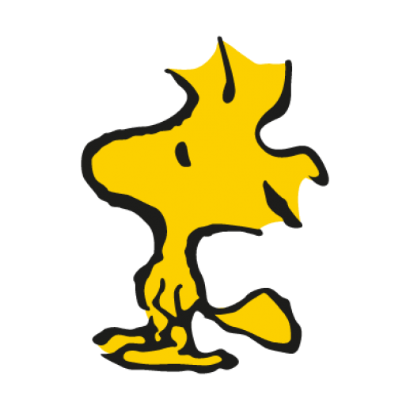
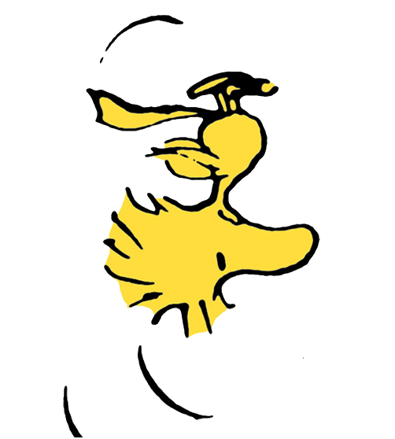
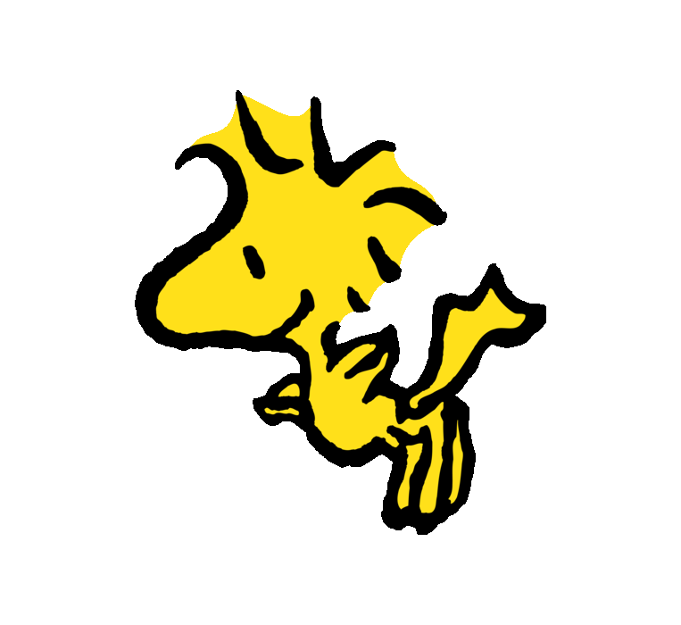

Hvorfor vælge modelflyvning?
Uanset om du er ung eller gammel, er der noget helt særligt ved fascinationen af flyvning. Med modelflyvning får du en hobby, hvor teknik, kreativitet og fællesskab går hånd i hånd.
Måske drømmer du mest om at flyve. Måske synes du, det er lige så spændende at bygge, justere og nørde med modellerne. Hos os er der plads til det hele – og til både begyndere og erfarne entusiaster.
Du finder modeller i mange størrelser, typer og prisklasser, så du kan være med, uanset om du er helt ny eller allerede har erfaring.

Hvad flyver du med hos os?
Hos Woodstock møder du en god blanding af motorfly, svævefly, jetfly og helikoptere. Derudover har vi også lidt linestyret flyvning og enkelte kameradroner.
De fleste modeller har elmotor, men du vil også opleve motorfly med nitro- eller benzinmotor. Det giver masser af variation – både for dig, der er ny, og for dig, der allerede kender hobbyen.

Hvordan kommer du i gang?
Det er nemmere at komme i gang, end du måske tror. Som ny pilot behøver du ikke straks købe en masse udstyr. Du kan begynde med at flyve med vores klubfly under vejledning af en af klubbens instruktører – allerede første gang du besøger os.
På den måde kan du mærke efter, om modelflyvning er noget for dig, og samtidig få hjælp til at finde ud af, hvilken model der er god at starte med. Du må gerne låne klubflyet i begyndelsen, så du kan komme trygt og godt i gang, før du beslutter dig for at købe dit eget.
Du kan også øve dig på en RC-flysimulator, hvis du har lyst, men det er bestemt ikke nødvendigt. Det vigtigste er bare, at du kommer ud og prøver.
For at være medlem af Woodstock Modelflyveklub skal du også være medlem af den landsdækkende organisation Modelflyvning Danmark. Det giver dig blandt andet en særlig ansvarsforsikring, så du er dækket, når du flyver på en godkendt modelflyveplads. Derudover får du et godt medlemsblad seks gange om året og adgang til et omfattende arkiv af tegninger, du kan bygge efter.
Kontingent i 2026
Junior: 450 kr + 100 kr/årJunior (u.18 år): 450 kr + 100 kr/år
Senior: 900 kr + 700 kr/år
(Junior er under 18 år)
Hvor finder du os?
Adresse: Krogstrupvej 165F, Torrild, 8300 Odder
Flyvepladsen ligger i rolige omgivelser med god plads omkring os. Kør op ad grusvejen ved Krogstrupvej 165, og drej til venstre ad den første sidevej – så kommer du lige op til klubben.
Har du lyst til at kigge forbi, er du meget velkommen.
Hvornår kan du flyve?
Flyvning med brændstofmotor (eller støjende elmotor) er begrænset til tirsdage og lørdage fra kl. 12:00 til solnedgang. Øvrige støjsvage elmodeller og svævefly må flyve alle dage.
Sommertid – fælles klubdage
Tirsdag: 17:00 til solnedgang – flyvningLørdag: 14:00 til solnedgang – flyvning
Vintertid – fælles klubdage
Tirsdag: 19:00 til 21:00 – byggeri og hygge i klublokale i SolbjergLørdag: 14:00 til solnedgang – flyvning
Det danske vejr er ikke altid perfekt til modelflyvning, så selv på klubdage kan det ske, at flyene bliver i bilen. Til gengæld bliver der stadig hygget, snakket og ofte tændt op i grillen.
Om vinteren er der også mange gode flyvedage, hvis du er klædt ordentligt på – og om lørdagen er der altid varme i klubhuset.
Følg med i vores Facebook-gruppe for aktuelle flyvetidspunkter, arrangementer og beskeder. Du er også meget velkommen til at skrive i gruppen, hvis du gerne vil besøge os på pladsen.
Fotogalleri
Her kan du se et lille udvalg af billeder fra flyvepladsen, klublivet og nogle af de modeller, du møder hos os.
Klar til at prøve?
Kig forbi klubben, mød medlemmerne og oplev selv, hvorfor modelflyvning er så fascinerende.
Læs mere / Meld dig ind